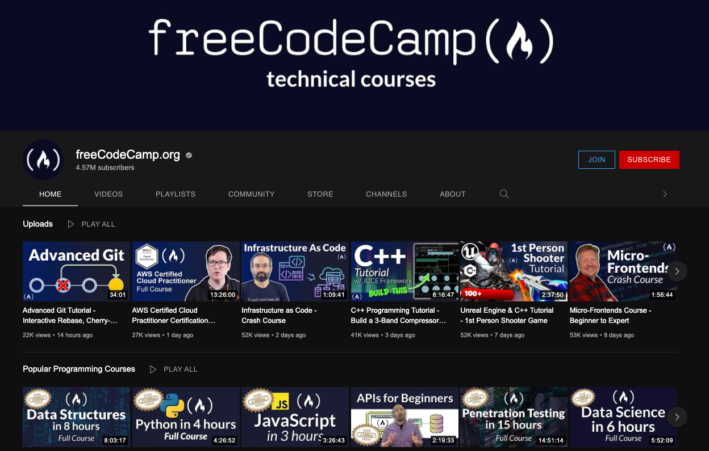
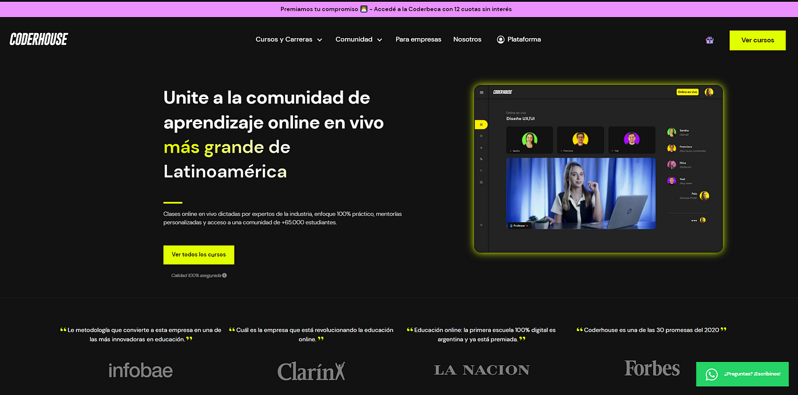

Durante mi trayecto educativo, decidí embarcarme en un camino autodidacta para expandir mis conocimientos en el mundo de la programación y el desarrollo web. En esta búsqueda de aprendizaje independiente, encontré y me sumergí en la plataforma de FreeCodeCamp. Esta plataforma, que se ha ganado un lugar destacado en la comunidad educativa en línea, se convirtió en mi compañera constante mientras exploraba los intrincados detalles de la codificación y el diseño web. La flexibilidad que brinda el aprendizaje autodidacta me permitió avanzar a mi propio ritmo y profundizar en las áreas que más me interesaban. A través de los diversos cursos y proyectos prácticos ofrecidos por FreeCodeCamp, adquirí habilidades en lenguajes de programación como HTML, CSS, JavaScript y más. Desde crear sitios web interactivos hasta desarrollar aplicaciones web completas, cada logro en la plataforma reforzó mi confianza y motivación. Uno de los aspectos más valiosos de mi experiencia en FreeCodeCamp fue su enfoque en el aprendizaje basado en proyectos. No solo estaba obteniendo conocimientos teóricos, sino que también aplicaba lo aprendido en desafiantes proyectos prácticos. Estos proyectos abarcaron desde la construcción de páginas web estáticas hasta la creación de aplicaciones de manejo de datos en tiempo real. A medida que completaba cada proyecto, sentía que mi comprensión y competencia en el desarrollo web se expandían de manera significativa. A lo largo de mi viaje en FreeCodeCamp, también fui parte de su comunidad en línea. Participar en foros de discusión, interactuar con otros estudiantes y recibir retroalimentación sobre mis proyectos contribuyó en gran medida a mi crecimiento. La sensación de pertenencia a una comunidad de aprendices apasionados y mentores experimentados me hizo sentir apoyado en cada paso del camino. En resumen, mi experiencia autodidacta en la plataforma de FreeCodeCamp ha sido profundamente enriquecedora. Desde los conceptos básicos hasta habilidades más avanzadas, he logrado adquirir un sólido conjunto de habilidades en el desarrollo web gracias a la plataforma y su enfoque en el aprendizaje interactivo. Esta experiencia me ha demostrado que la autodisciplina, la pasión y los recursos en línea adecuados pueden converger para crear oportunidades educativas excepcionales.
En mi continuo compromiso con la mejora constante y el desarrollo de mis habilidades en el ámbito de la programación y el diseño web, he tomado la decisión de dar un paso adelante en mi educación al inscribirme en la reconocida academia de CoderHouse. Si bien mi experiencia autodidacta en plataformas anteriores fue valiosa y gratificante, siento que es el momento adecuado para beneficiarme de la instrucción experta y la estructura que una academia consolidada puede ofrecer. Elegir a CoderHouse como mi institución educativa preferida no fue una decisión tomada a la ligera. Investigué y evalué cuidadosamente las opciones disponibles, y CoderHouse se destacó no solo por su prestigio en el campo de la educación tecnológica, sino también por su enfoque práctico y orientado a proyectos. Este enfoque alinea perfectamente con mi estilo de aprendizaje y mi deseo de obtener experiencia práctica mientras adquiero nuevos conocimientos. Una de las características que más me atrajo de CoderHouse es su énfasis en la aplicación práctica de las habilidades. A través de una combinación de clases teóricas y proyectos prácticos, confío en que podré profundizar mis conocimientos y construir una cartera sólida de proyectos que demuestren mis habilidades a futuros empleadores y colaboradores. La posibilidad de trabajar en proyectos reales bajo la guía de instructores expertos es un factor que valoro enormemente, ya que sé que esto acelerará mi crecimiento profesional. Además, la comunidad que rodea a CoderHouse es una fuente de inspiración y apoyo. Tener la oportunidad de conectarme con otros estudiantes apasionados y compartir ideas y desafíos contribuirá significativamente a mi aprendizaje. Estoy ansioso por formar parte de esta red de aprendices y mentores, y estoy seguro de que las interacciones enriquecedoras y las conexiones que formaré serán invaluables en mi trayectoria educativa y profesional. En resumen, mi decisión de unirme a la academia de CoderHouse es un paso importante hacia la perfección de mis habilidades en el mundo de la programación y el diseño web. Estoy emocionado por las oportunidades que esta decisión traerá y estoy comprometido a aprovechar al máximo cada recurso, clase y proyecto que la academia tiene para ofrecer. Con determinación y el apoyo de CoderHouse, estoy seguro de que mi viaje educativo alcanzará nuevos niveles de éxito y logros.
